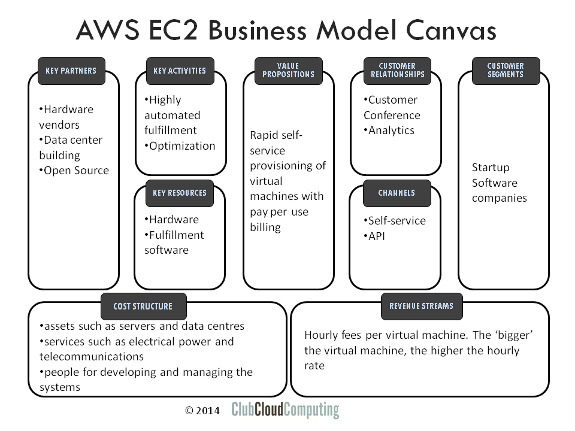

Cloud Computing is not so much about technology but more about the new business models that this technology enables. The question then is, how do these business models look? One of the most inspiring ways of looking at business models is through the so-called “Business Model Canvas”. This article explores the basics of cloud computing business models as drawn out on such a canvas.
Business Model Canvas
The business model canvas is a visual template for developing and discussing business models. For more information see http://en.wikipedia.org/wiki/Business_Model_Canvas and http://www.businessmodelgeneration.com/

The business model canvas has nine basic building blocks and specific relations between those building blocks. The rest of this article describes each of them, and gives a brief example of how they apply to a cloud provider proposition. The main cloud provider example I will use is Amazon Web Services (AWS), in particular EC2 (virtual machines on demand). This is an Infrastructure as a Service offering. The power of the business model canvas approach will become clear if we see how it can distinguish between various cloud service offerings and traditional IT.
Customer segments (CS)
In the Business Model Canvas, “Customer Segments” are the groups of customers that the company ultimately serves, i.e. the ones that consume and pay for the services.
In the AWS case, although basically anybody with a credit card can spin up a virtual machine, it looks like Amazon is primarily targeting software developers and (startup) SaaS providers as its main customers. Historically, Amazon development teams were the first customers. External customers were initially added as an afterthought.
Value Propositions (VP)
The value propositions reflect the customer’s problems and needs. This is the central element that describes why a customer would ultimately pay for the product or service.
The value proposition of cloud computing centres around its five essential characteristics. For example, in the AWS EC2 case, the core component of the value proposition is rapid self-service provisioning of virtual machines with pay per use billing. For each individual customer this translates into different business advantages. An example is reduced capital expenditure and reduced risk of over-investing or under-provisioning.
Channels (CH)
Value propositions are delivered to customers through communications, distribution and sales channels.
It is often assumed that cloud computing relies solely on self-service direct sales, but the reality is much more diverse. SaaS providers in particular are developing extensive partner programs.
AWS primarily employs a self-service direct model, where the delivery is through APIs. AWS also provides a web user interface to those APIs. Interestingly, that interface used to lag in functionality behind the main AWS services, but these days most new features are announced on the API and the Web UI simultaneously. The model is enhanced by premium support.
Customer Relationships (CR)
Customer relations are established and maintained with each specific customer segment.
One of the ways that AWS maintains relationships with its customer segments is through conferences. The 2013 re:Invent developer conference attracted 9000 visitors. Additionally, there are vibrant online communities. Finally, though details are scarce, we can assume that AWS does extensive analytics on the activities customers engage in on the platform.
Revenue Streams (RS)
Revenue streams are the result of value propositions that are successfully offered to customers.
The structure of revenue streams is where cloud computing differs from earlier IT service models, as they are usage based rather than asset based.
AWS basically charges hourly fees per virtual machine. The ‘bigger’ the virtual machine, the higher the hourly rate.
Key Resources (KR)
Key resources are the assets required to offer and deliver the previously mentioned elements (e.g. value proposition, customer relationships).
AWS owns massive amounts of hardware, estimated at 1 million servers or more. That is housed in dozens of data-centres worldwide. But there is more; the service can only be delivered through advanced and unique fulfilment software and processes. Amazon must have invested substantially in that.
Key Activities (KA)
The key resources perform key activities.
At AWS the key activity, delivery, is highly automated. But at the scale of AWS, oversight and resource planning is still a serious effort. Optimizing assets versus utilization is essential in the IaaS business model. Through economies of scale, AWS is able to spend a lot of effort on these activities.
Key Partnerships (KP)
Some activities are outsourced, and some resources are acquired outside the enterprise.
AWS buys immense amounts of hardware, and uses a lot of (open source) software. Building of data centres is also likely to be outsourced.
Cost Structure (CS)
All business model elements result in a cost structure.
In more traditional IT service models the revenue streams are tightly coupled to the cost structure. The cloud computing innovation is also about decoupling these.
At AWS the main cost elements are in assets such as servers and data centres; in services such as electrical power and telecommunications; and in people for developing and managing the systems.
Summary
The business model canvas is a good tool to map out the particularities of cloud provider business models. In this article we have only looked at the basics of a particular infrastructure provider. For software-as-a-service providers, cloud brokers, or internal/private cloud providers, the canvas can also be used to discuss their differences.
If you want to know more about the business of adopting cloud computing, have a look at my “Cloud Adoption Essentials” course.


{kind=link}
{kind=link}
Recent comments